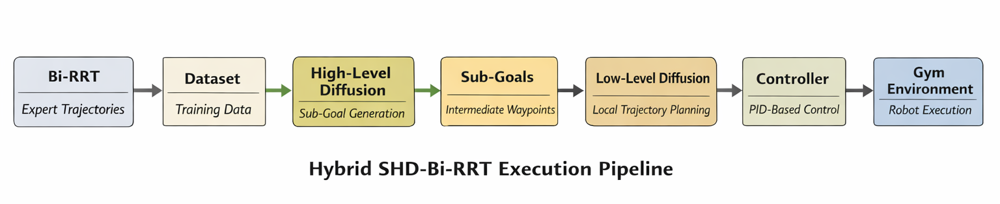
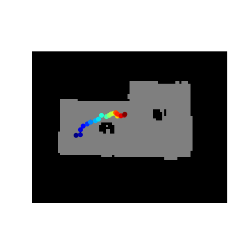

Trajectory Planning in Mobile Robots Using Diffusion Probabilistic Models
Teaching a TurtleBot to plan its path with a diffusion model instead of a classical planner.
The background. Classical planners like RRT and BiRRT search for a path step by step. For my Master's thesis in Automation and Robotics at TU Dortmund, I wanted to know whether a diffusion model, the same family of model behind image generation, could learn to "denoise" a rough path into a smooth, collision-aware trajectory instead.
The build. I developed a hierarchical diffusion-based trajectory planning framework, trained on large-scale BiRRT datasets generated across SLAM-mapped environments. The trained models were then integrated into a TurtleBot's navigation stack using ROS2 and Nav2 to demonstrate autonomous navigation end to end.
The approach. Rather than replacing classical motion planning outright, the thesis combines generative modeling with it, using the diffusion model to improve path feasibility and robustness on top of the classical foundation.
The stack. Python, PyTorch, ROS2, Nav2, SLAM, BiRRT-based dataset generation.
The grade. 1.3 on the German university grading scale, where 1.0 is the best possible grade and 4.0 is the minimum passing grade. 1.3 corresponds to sehr gut (very good).
What I learned. How much of "good navigation" is actually about the shape of your training distribution, not just the model architecture. This project set the direction for everything I've worked on since.

